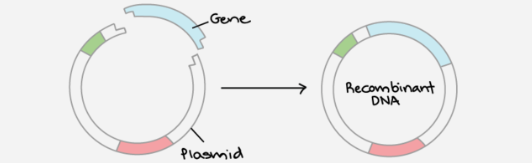
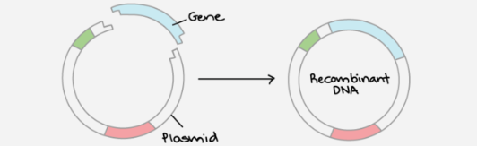
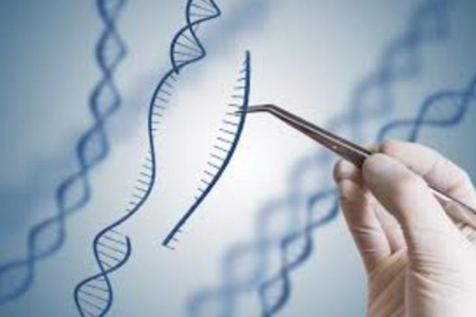
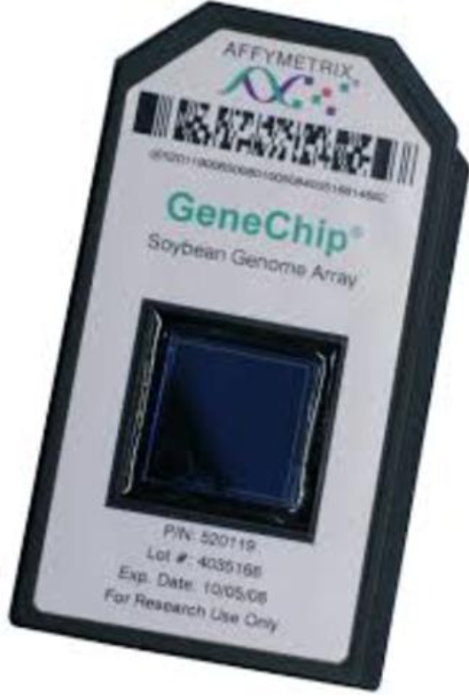
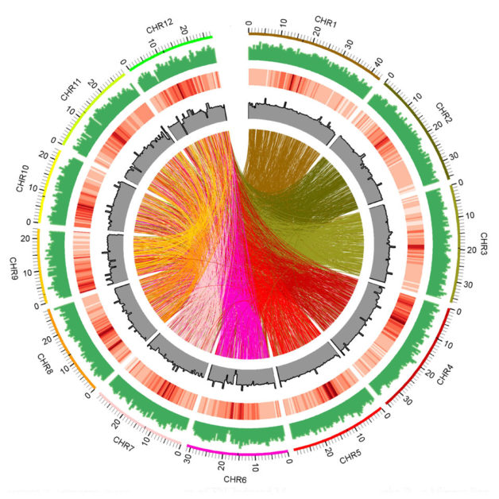
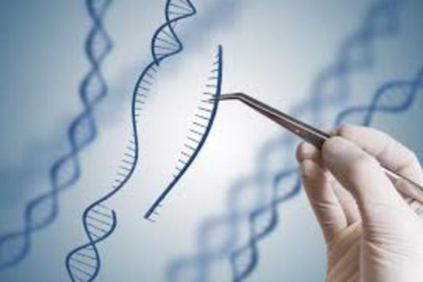
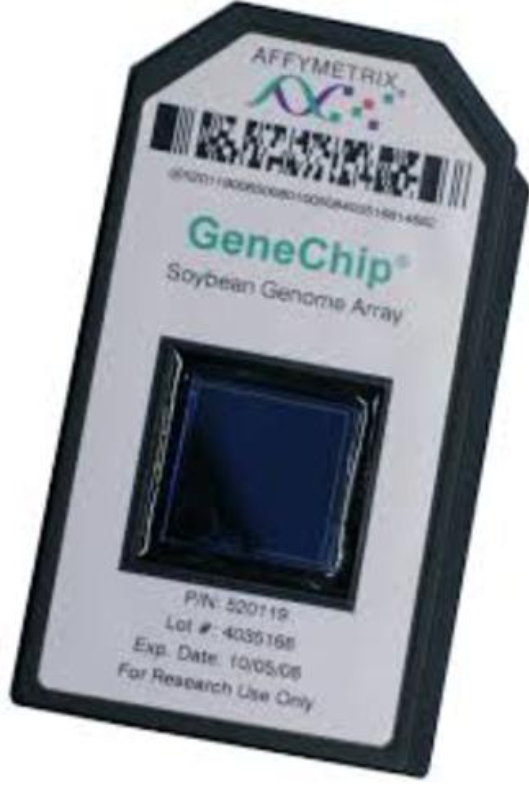
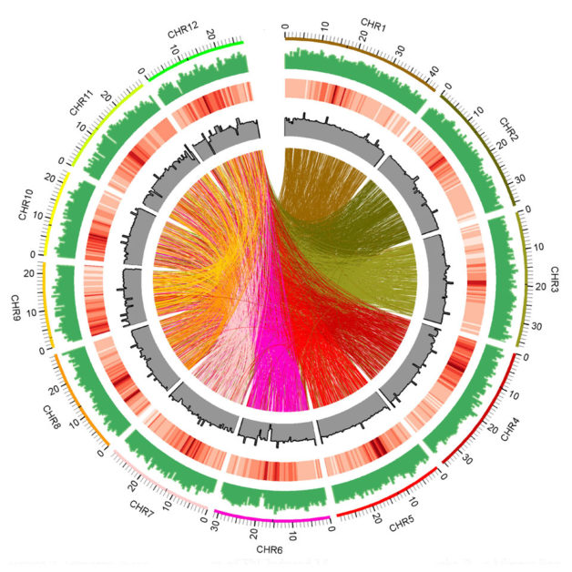

ACCOMPLISMENTS
BCE
- 6000 BCE. Cheese & Yogurt
1600s
- 1675. The discovery of bacteria and protozoa
1700s
- 1798. First Viral Vaccine
1800s
- 1862. Discovery of Bacterial Origin of Fermentation
- 1863. Laws of Inheritance is discovered
- 1877. Technique for staining bacteria is created
- 1881. Vaccines for cholera and anthrax is created
- 1885. First Rabies Vaccine is created
1900s
- 1919. The word 'Biotechnology' is used/created
- 1928. Creation of the first Antibiotic
- 1953. DNA is discovered
- 1972. DNA between humans and chimpanzees and gorillas is discovered to be similar
- 1973. First Successful recombination DNA Experiment
- 1980. Cohen and Boyer recieve a patent for gene cloning
- 1981. Mice are Cloned
- 1982. Humulin is the First Biotech drug Approved by the FDA
- 1983. PCR is created
- 1990. First Approved Gene Therapy Treatment
- 1994. Flavr Savr tomato is approved
- 1995. The First Hepatitis A Vaccine is Developed
- 1996. The GeneChip is developed
- 1997. First Mammal is Cloned
- 1997. The First Artificial Chromosome is Created
- 1998. Human skin is produced for the first time in the lab.
2000s
- 2000. Rough Draft of the Human Genome Project is Completed
- 2002. Rice became the first to crop to have its genome decoded
- 2003. The Human Genome Project is completed
- 2007. First Nanoradio is Discovered
- 2008. "Kibo" is launched
- 2009. First Pacemaker is Created
- 2010. Federal Funding for Research on Embryonic Stem Cells is freed up
- 2011. The First Cord Blood Therapy is Approved
- 2012. FDA issues draft rules for bio-similar drugs.
 

 




